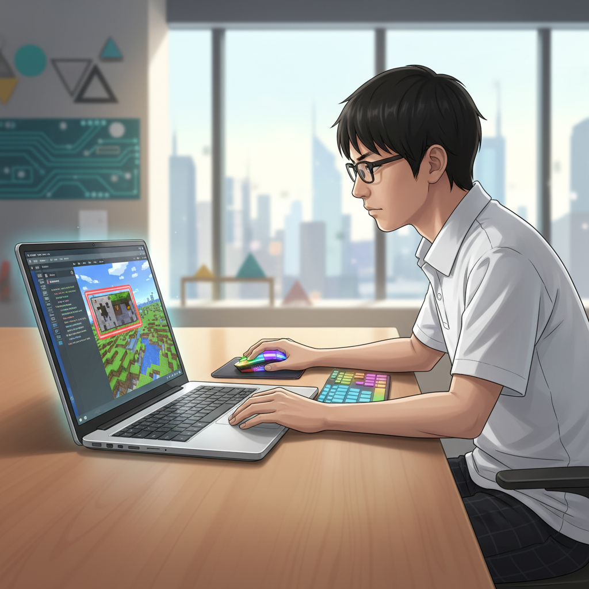
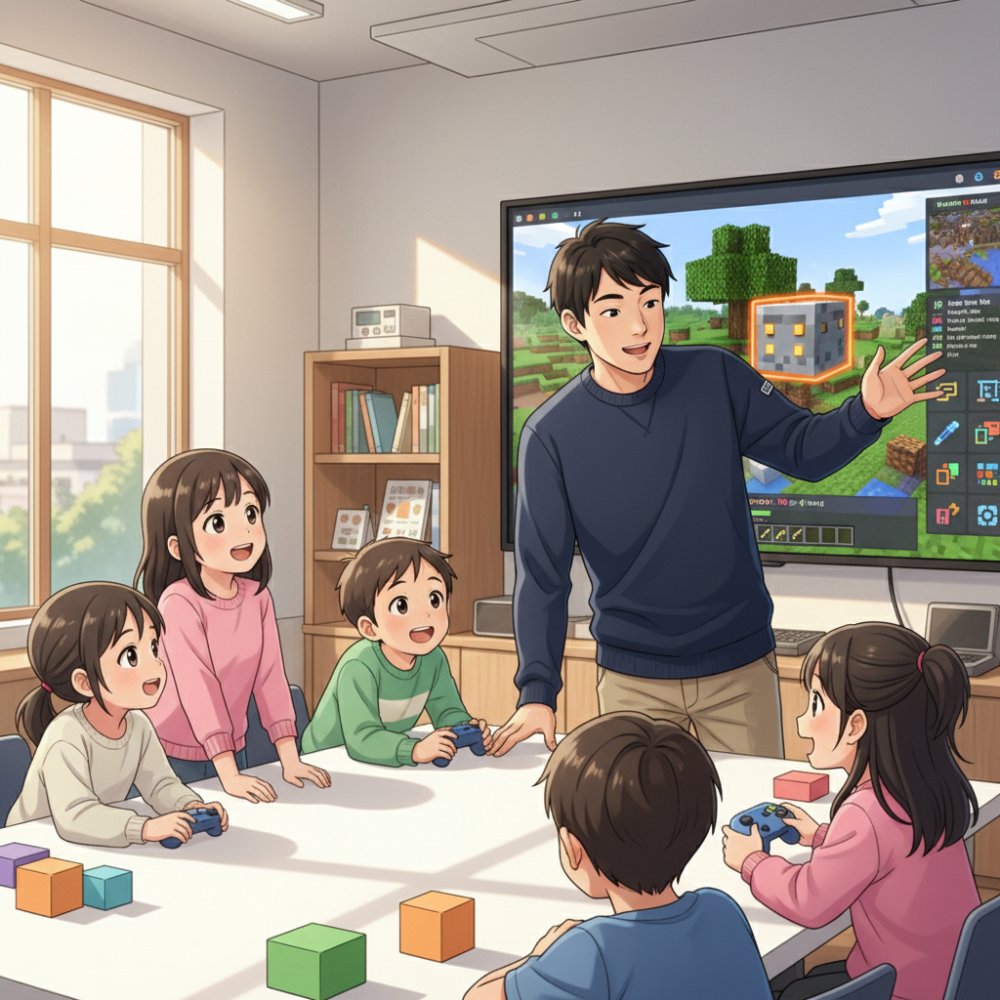
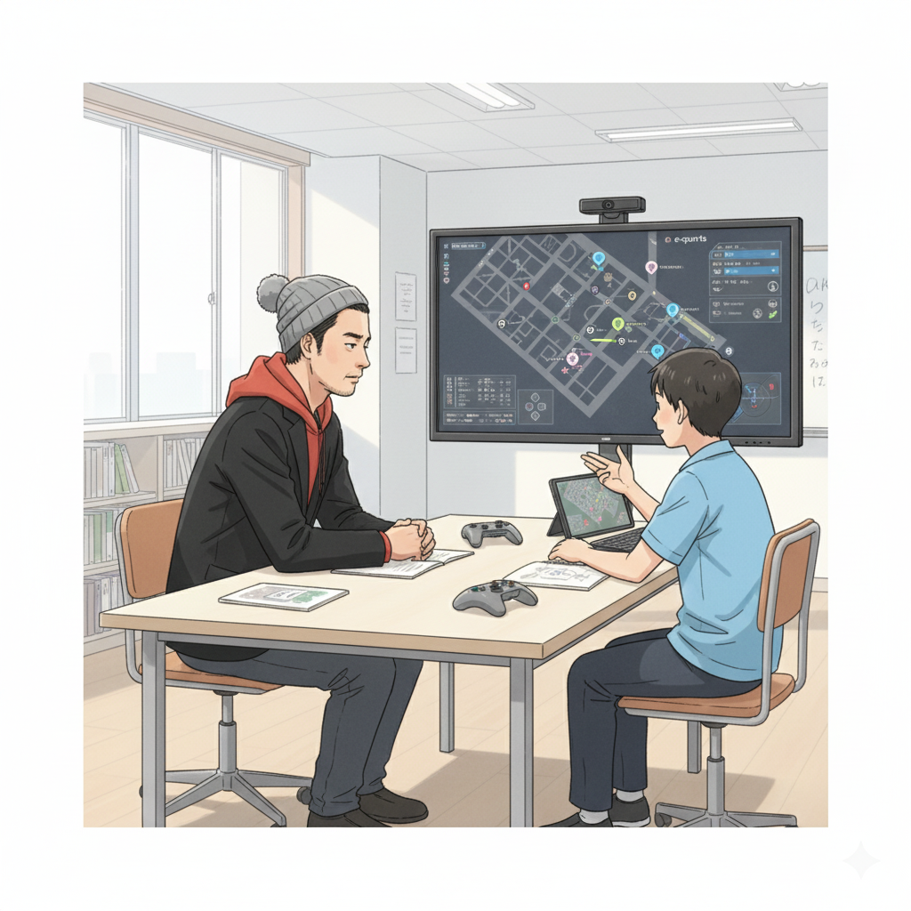
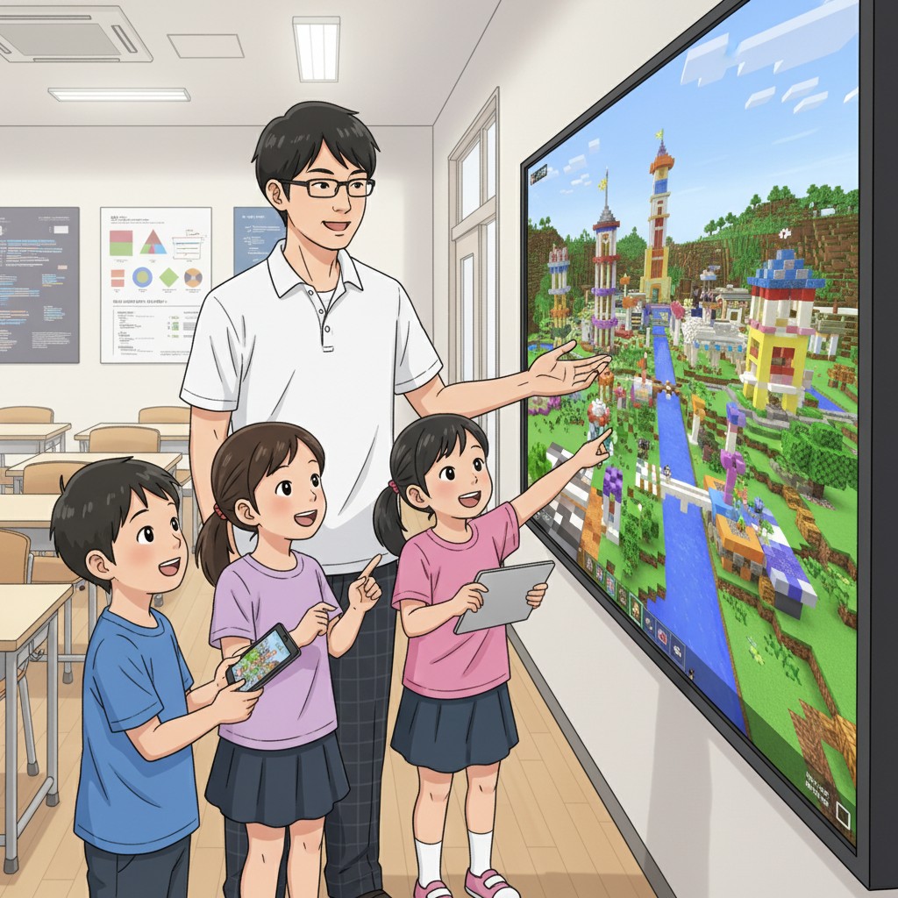

マインクラフトが秘める無限の可能性：CTO井上が語る魅力

皆さん、こんにちは！if塾のCTO井上です。突然ですが、マインクラフトって知っていますか？ただのゲームだと思っている人もいるかもしれませんが、実はすごい可能性を秘めているんです！特に、発達特性を持つ子どもたちにとって、マインクラフトは最高の学びの場になり得ます。
僕自身、子どもの頃からゲームに夢中で、特にマインクラフトにはどっぷりハマっていました。集中し始めると周りの音が聞こえなくなるくらい（笑）。でも、その集中力こそが、僕の強みなんです。高校生の時、塾頭に出会って、ゲームへの情熱をプログラミングスキルに繋げてもらい、今ではif塾でマインクラフト教育を担当しています。コマンドブロックを使ったプログラミングは、まるで魔法みたいで本当に面白いんですよ！
ADHDの特性を持つお子さんの中には、一つのことにものすごく集中できる子がいますよね。その集中力を、マインクラフトを通じて伸ばしていくことができるんです。マインクラフトの世界で、自分のアイデアを形にする喜びを体験してみませんか？
ゲーム開発で論理的思考を育む：成功体験が自信に繋がる

マインクラフトのコマンドブロックを使ったプログラミングは、論理的思考を養うのに最適です。例えば、複雑な自動ドアを作ったり、ミニゲームを開発したり。一つ一つ試行錯誤しながら、自分の思い通りに動くようにプログラムを組んでいく過程は、まるでパズルを解くような面白さがあります。
塾長の山﨑も、中学時代は特別支援学級に通っていましたが、高校で塾頭と出会い、マインクラフトを通じてプログラミングの面白さに目覚めました。小さい頃からゲームが好きで、特にeスポーツにも興味があったそうです。山﨑は言います。「ゲームを通じて得た経験は、間違いなく今の自分を支えています。ADHDやASDの特性があっても、好きなこと、得意なことを活かせば、必ず道は開ける」。
if塾では、一人ひとりのレベルに合わせた丁寧な指導を心がけています。最初は簡単なコマンドから始めて、徐々にステップアップしていくので、プログラミング初心者でも安心です。小さな成功体験を積み重ねることで、自信がつき、新しいことに挑戦する意欲も湧いてきます。
eスポーツプレイヤーY君の挑戦：発達障害と集中力

if塾には、eスポーツプレイヤーとして活躍しているY君という生徒がいます。Y君もまた、発達障害の診断を受けていますが、持ち前の集中力とゲームへの情熱を活かして、プロを目指しています。
Y君は、ゲームに没頭することで、周りの雑音をシャットアウトし、自分の世界に入り込むことができます。その集中力は、他の追随を許しません。塾頭は、Y君の才能を見抜き、eスポーツの世界で活躍できるよう、メンタル面や戦略面でサポートしています。
Y君のように、自分の特性を理解し、それを強みに変えていくことは可能です。if塾では、一人ひとりの個性を尊重し、その才能を最大限に引き出すためのサポートを惜しみません。マインクラフト 教育を通じて、子どもたちの可能性を広げていきたいと考えています。
if塾で変わる未来：一歩踏み出す勇気を

もしあなたが、自分に自信が持てなかったり、何をやってもうまくいかないと感じていたりするなら、ぜひif塾に来てみてください。ここでは、同じような悩みを持つ仲間たちと出会い、共に成長していくことができます。
マインクラフトは、単なるゲームではありません。創造性を刺激し、論理的思考を養い、コミュニケーション能力を高めるためのツールです。if塾では、マインクラフト教育を通じて、子どもたちの可能性を最大限に引き出し、自信を持って未来に向かって歩んでいけるようサポートしていきます。
さあ、あなたもif塾で、新しい自分を見つけてみませんか？
🎯 興味を持っていただいた方へ
if塾では、発達特性を持つ子どもたちの「好き」を「才能」に変える教育を行っています。現在の記事内容と実際の活動に大きなズレはありませんが、詳細については直接お問い合わせください。
📌 記事について
この記事は、塾頭による完全自動化への挑戦としてAIが自動生成しています。将来的には塾頭が執筆しているような記事になることを目指しており、現時点では事実と異なる内容が含まれる可能性があります。最新の正確な情報については、お問い合わせフォームよりご確認ください。
🤖 Generated with AI - if塾のブログ自動化プロジェクト